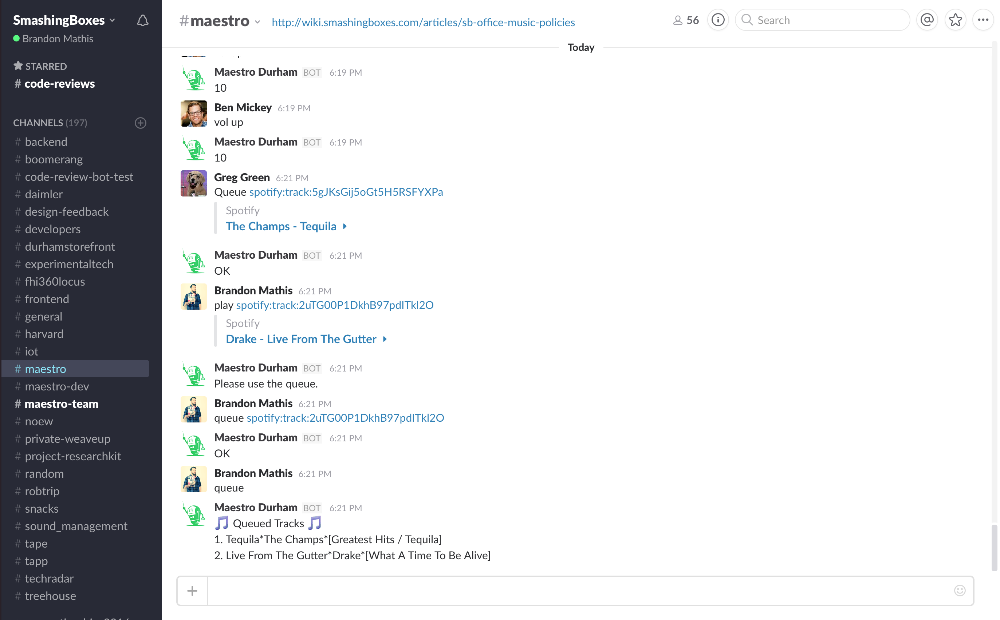

Turn Spotify into a collaborative jukebox for your
workspace through this simple Slack integration.
workspace through this simple Slack integration.
HOW IT WORKS
Queue Songs & Playlists -Use a simple Slack command to queue any song listed in Spotify by including the URI.
Any User Can Participate - Users within the Maestro channel can get invovled in controlling the music output./>
Any User Can Participate - Users within the Maestro channel can get invovled in controlling the music output./>
Skip & Vote to Ban -Any individual user can skip songs or a small group can join together to ban one.
Control Volume - Change the output volume directly through Slack with simple commands. Set it to your specified volume level or make incremental changes.
Control Volume - Change the output volume directly through Slack with simple commands. Set it to your specified volume level or make incremental changes.
See Maestro in action on the Smashing Boxes Slack.

Using Maestro for your office? Send us storied & feedback at